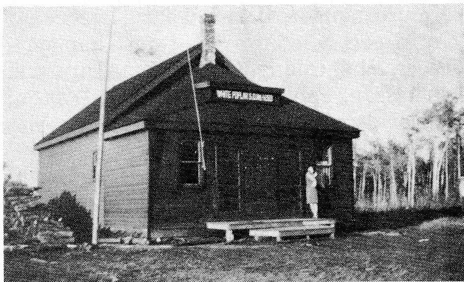
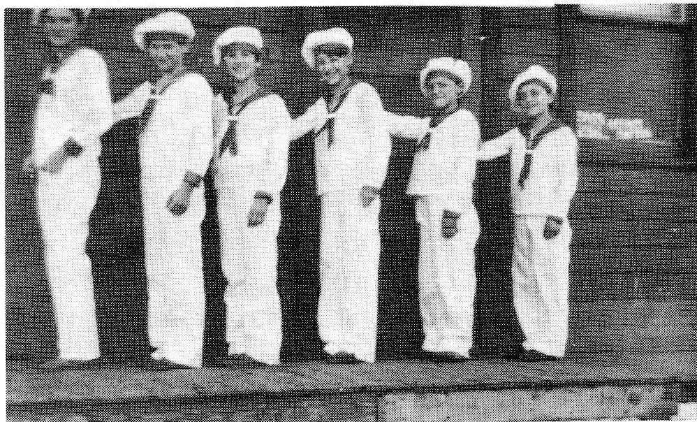
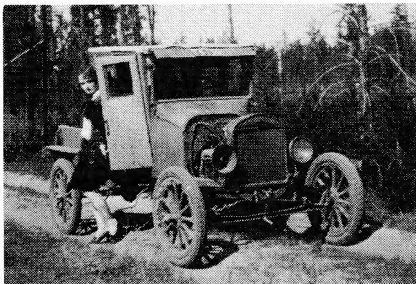
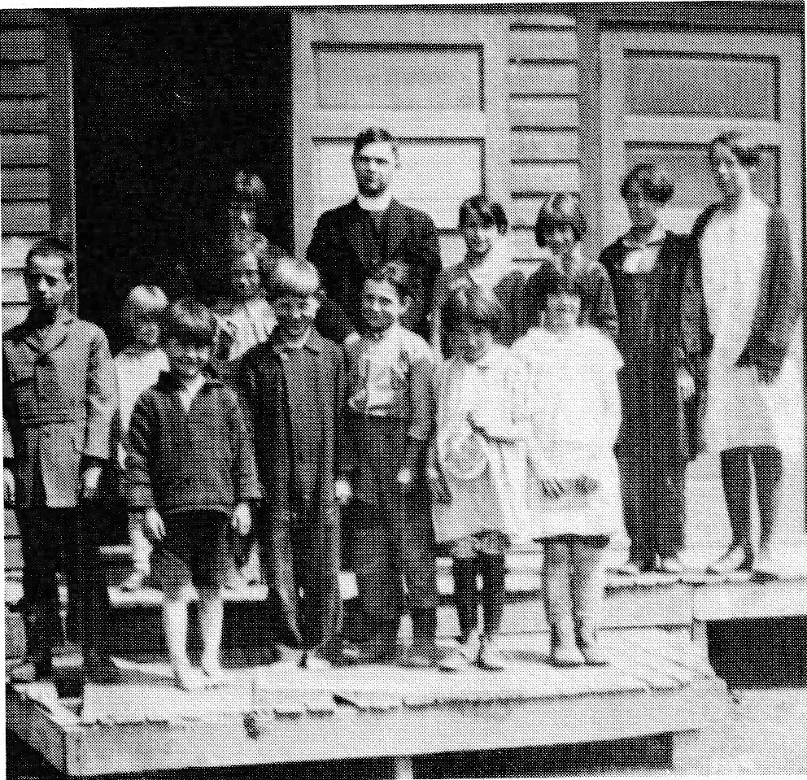
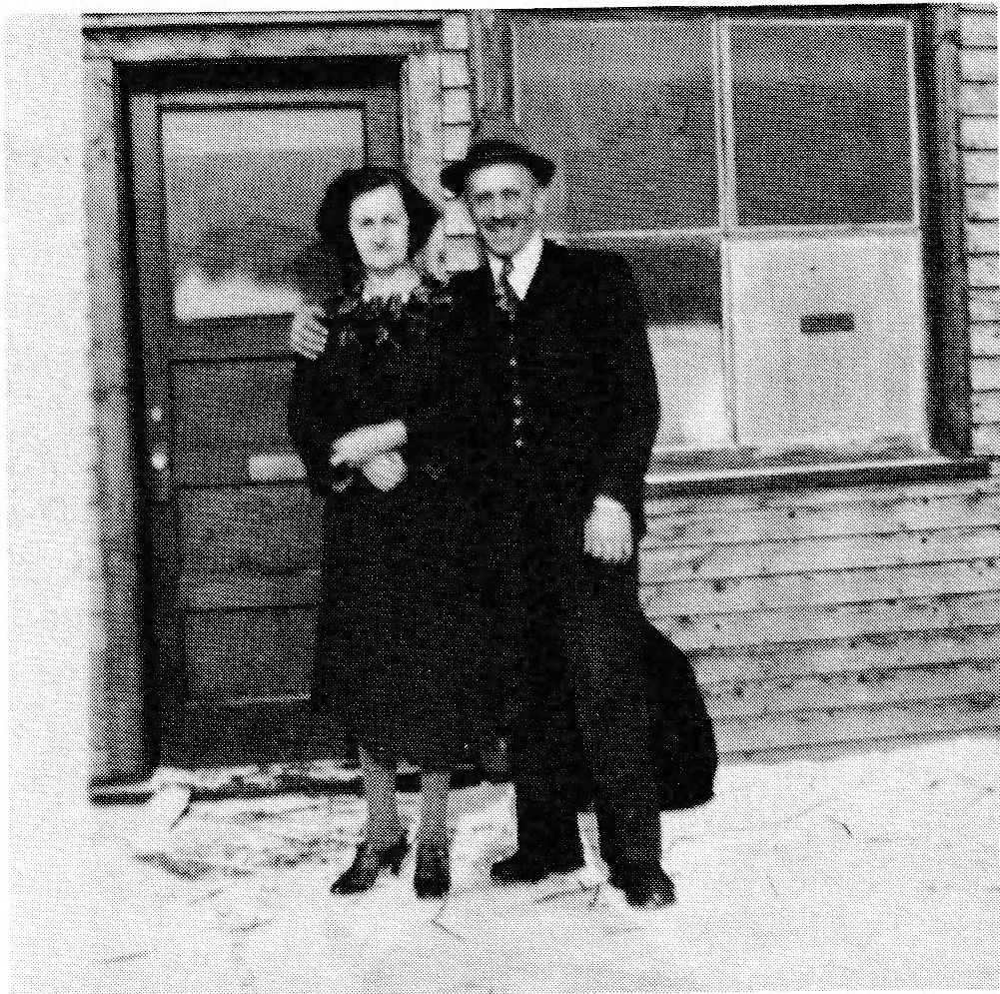
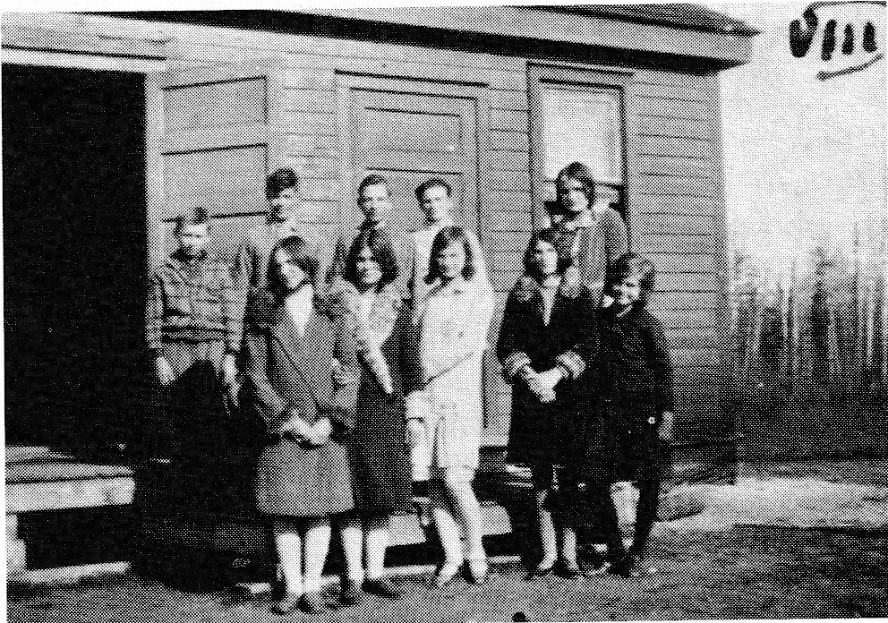
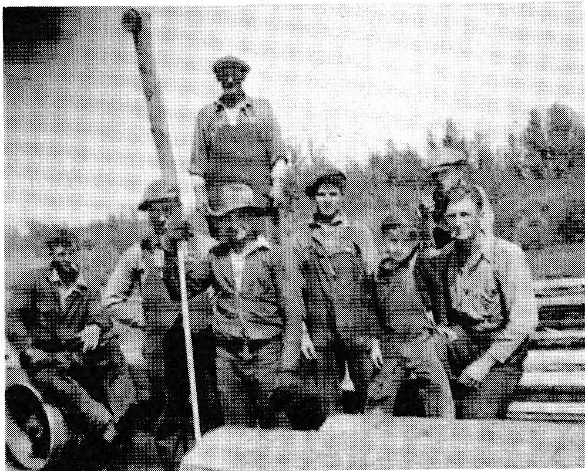
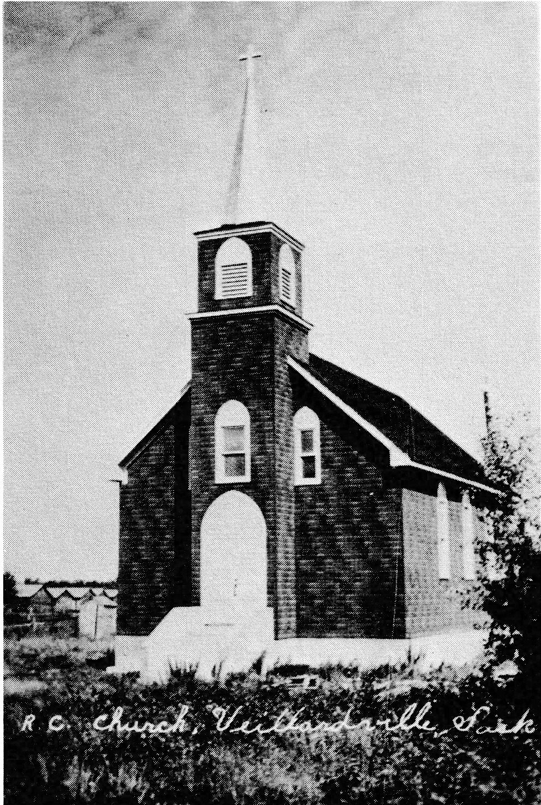
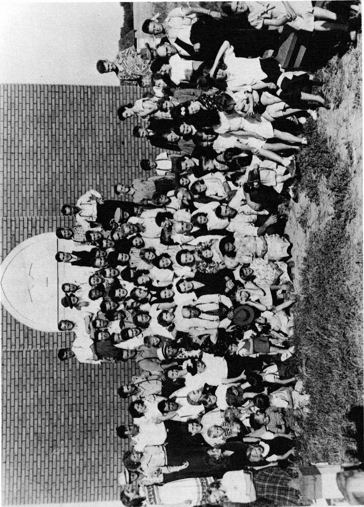
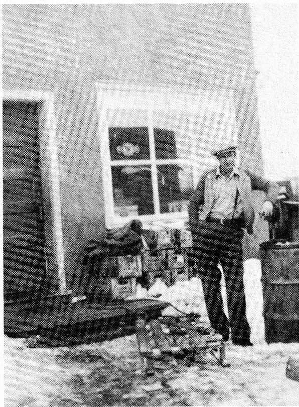

Part V - Veillardville
Submitted by Maxine (Alain) Prentice
On each trip to Veillardville, as we travel along Highway #3, I am struck by the distinct wilderness of the area. A sense of struggle and feelings of isolation are prevalent. Yet this parkland region of our province holds a curious attraction.
The poplar and birch growths are interspersed with spruce and jackpine. Swamps and wandering creeks are part of the natural terrain. Each year more of the area is opened up; the clearing is made easier now with bigger and more sophisticated equipment.
A look across the country reveals the flatness of the land with its rich black soil. Precipitation levels are high with the annual rainfall averaging sixteen to eighteen inches and the snowfall of fifty inches. This abundance of moisture, coupled with late springs and early frosts, results in the farmers' annual battle each harvest.
As growth is extremely heavy, long warm days are needed each fall to ripen and dry the grain. However, such days belong to summer and have long since fled the country. So the struggle often ends in a compromise. The crops are harvested; the tough, damp grain stored briefly till grain dryers can complete that which was left unfinished by nature. Harvest is over for another year but not without its toll on the farmer. And his work is not yet done for the heavy growth each year results in an abundance of straw which must be dealt with. A large percentage of the flax straw is either gathered into piles or left in rows and burnt while barley, oats and wheat straw is baled for feed and bedding. It is these conditions which lend to mixed farming.
Harvest in the fall of 1985 lasted a full two months. Growth was so heavy that many reported their winter wheat to be five to six feet high. Heavy winds lodged and twisted the crops making harvesting operations even more difficult than usual. The winter which preceded this crop showed a record snowfall of seventy-two inches.
It was to this area of Veillardville that our pioneering forefathers, Alain and Lessard, arrived in the year 1928.
With the coming of the Canadian Northern Railway in 1903 the settlers had a better means of transportation. Various blocks of land were soon opened up for development; one of these was the White Poplar Settlement. From Valley Echoes we learn the following facts: this block of land was taken out of the Pasquia Forest Reserve and first proposed for homesteads in 1908. It would be 1926 before the remaining quarters of Township 45 would be available. The new settlement was named after the White Poplar Sawmill Company. While the lumbering concerns drew the people in the earlier years, the homesteads now attracted settlers with a desire to develop and farm the land. Valley Echoes lists the homesteaders from 1909 through to 1940. The first settlers to apply for homestead patents were John Carlson in 1909 and Napoléon Blanchette in 1910. No one applied in 1911. However, over twenty others applied from 1912 through to 1920. Some of the more familiar names were Clarence A. Smith and son, Clarence C.; Louis Laplante; Geo. Elder; Wm. Charles Quinn; Wm. Thrussell; William Jaszan; Paul Gagnon; Herbert Walton; Robert Davidson; and Joseph Sprackman. Also among them was Louis Veillard.
Louis had lumbered some years before at Greenbush, then returned to his native country, France, where he served with distinction in the First World War. Shortly after, in 1917, he returned to the area with his wife, Angélè. We are provided with a glimpse of life during these early years through her eyes. She writes in Mes Souvenirs:
"So, in April, 1917, we had reached home -- which would later be called Veillardville! We got up early and got to bed late .... an area was cleared of its trees for the construction. Plus, four acres of land were cleared, by axe, of course; a small patch of potatoes, a garden and the rest in oats were seeded."
"In the meantime, with the money saved from the sale of wood, four cows and four calves, a bull, a saddle horse, a pig and some chickens were obtained. We were farmers! But, there was no road to transport the cream to a dairy; there was a river and creek to cross five times ... without a bridge! An arrangement was made with the section foreman from Hudson Bay who delivered our cream to the station and brought back the empty can. Another arrangement was made with the 'fire ranger' (who travelled by jigger on the train tracks) to bring us our mail which he left in a box nailed to a tree close to the tracks. A small flag told him when he should pick up our letters to post. For the essential trips to Hudson Bay we had the saddle pony which swam across the river and creek."
Later in her writings Angélè relates, "Our first harvest of oats was cut with the scythe. I tied it in sheaves like we did in France."
Once settled, the early pioneers began to consider the need of an education for their youngsters. Valley Echoes tells us that a meeting was held in the summer of 1919, the purpose of which was to form a School District. Two and a half years later, the school opened. Located on the S.W. ¼ Sec. 10-45-4 W2, it was called the White Poplar School District #4269 - a number still remembered by many of the students that attended there. Many teachers came and left during the years of 1922 through to 1960, when the school was closed.


One of the early teachers was Nellie (Barteluk) Lozinski. She recalls:
"It was the year of 1929 when I boarded a train that took me to Veillardville where I had secured a teaching position. It was Depression time - the time when there were one hundred applicants for each job. I felt fortunate that Mr. H.W. Harrison, Inspector of Schools, and Rev. Fr. Rivard had recommended me."
"As I held my teaching certificate in my hand I felt that at last I had a job for which I was trained."
"Then came the disappointment. My first glimpse of the school showed a drab dark green building set in a yard of low bushes and trees."
"But my spirits rose the following morning when I viewed some forty eager faces gazing at me with such love and trust."
"As days, weeks, months and years went by, the children showed that they were eager to learn and that they were supportive of me in my efforts to teach them."
"Due to lack of money we had little in the form of play equipment but the children found ways to amuse themselves during play periods. Their inventive minds devised means of competitive play."

L.R.: Edithe Alain, Edith Quinn, Berthe Alain, Clara Lessard, Yvonne Veillard.
"Then there was the yearly Christmas concert. The weeks of preparation and nervousness preceding this event was all worthwhile when the children saw how proud their parents were. Santa never failed to turn up on those occasions. He always remembered even the smallest tot when he handed out bags of goodies."
"There were also fun times for all both young and old when the walls of the old school rang out with the music of the fiddle and piano. The dancing feet did not stop until the wee hours of Saturday morning."

"A quiet time for reflection came each day at 3:30 PM when pupils remained after hours to study Christian Ethics (Catechism) under my instruction. Once a month Rev. Fr. Rivard came to take part in this class."
"Those were years when we lacked money and modern conveniences but we did not lack friendship and understanding."
"One day Mrs. Quinn received a box of used clothing from some kind organization in Ontario. She shared the clothing with the pupils of the district. She even let me pick out a dress."

"It isn't always easy - this thing we call life. Plans don't always work out the way we want them to and misfortunes sometimes cloud and even change our horizon. So after almost four years as teacher in the White Poplar School the school board informed me that they no longer could pay me my salary and had to let me go. With their promissory notes stating that they would pay me later, I bid the pupils that I had learned to love a farewell, closed the door and left for other fields."
Then Mrs. Lozinski paid her former pupils a tribute as she recalls, "In my fifty years as teacher, as I view in memory all the faces along the way, I hold fond memories of the time I spent with the pupils of White Poplar School."
The settlers did not have a post office in the early years so when one opened in Veillard's store in September 1928 with Mrs. Angélè Veillard as Postmistress, it was a happy day for everyone. (As well as the date of its opening, Valley Echoes tells us that the post office was named Veillardville and that barely two years later, the name of White Poplar Siding was changed to Veillardville.)

The nights the mail train arrived gave the folks in the district cause to gather at the store. It was an opportunity to socialize and to pick up a few groceries while waiting for the train to arrive. Maurice Veillard, Angélè and Louis' son, was a young boy of seven in 1933. He recalls mail nights during those years:
"Every Monday, Wednesday and Friday eve- ning, the mail train came in at 10:00. It was one of the highlights for the people throughout the dis- trict. There'd be 40 - 50 of the settlers crowded in the small store. My dad and Smokey Alain, who ran the other store, did most of their business on those nights and also after church on Sundays. They could almost have closed up the rest of the week. The kids would come along with their folks and we'd play tag or hide 'n seek outside."
"At our store, there were always six or seven men sitting around on mail nights playing cards. Four of the regulars were Harold Parks, Bill Salamondra, Dad (Louis Veillard) and Henry Alain. Poker was often played. The stakes were low so there were never any big winners. For the most part, the money simply changed hands. However, feelings could run high at times. One night, in a high-low game in which they split the pot, one of the two left in the game was Henry Alain. Sitting next to him was Ed Barry. As the people were throwing in their cards - five of the others had given up - Ed was picking up the cards getting ready to deal the next hand. Now Henry had a bad habit of never having enough money in front of him. So he laid his cards down to get some more money out of his pocket. Then he called the last bet, 'Now, gentlemen of the jury,' which was one of his favorite sayings, 'I've got five aces' and he looked for his hand. It was gone! Ed had picked up his cards and was already shuffling them for the next deal. Henry had lost his share of the pot. He was so angry he never talked to Ed for the next two months."
The men played cards on rainy days and through the winter, too. In the evenings, the playing might have gone on till the wee hours of the morning were it not for the arrival of the mail train. Louis enjoyed cards and could, on occa- sion, turn a deaf ear to the sound of the train's arrival and to the Postmistress's urgent plea to take the mail sack out. It was not often that she got the last word in but it was known to happen. Maurice relates:
"Bicycle is a term used in the game of poker. It refers to an ace - deuce - three - four and five. This particular night they were playing a high- low game. The train was already stopped and the whistle was blowing. Mom was tugging at Dad's shirt, 'Get out with the mail, Louis. Get out with the mail.'"
"Now Dad, wanting to get his half of the pot, replied, 'Leave me alone,' and promptly announced to the other players, 'I've got a bicy-
cle.' To which Mom quickly replied, 'Well, get on the damn thing and get that mail out to the train!' Mom didn't know what a bicycle meant as she didn't play cards."
The custom of cards and socializing mingled with business carried on in the late evenings at the rural store continued into the Fifties and Sixties. In Valley Echoes we read that the Post Office closed January 31, 1964. What we do not read is that, with the closure, the tradition of gathering on mail nights was discontinued. It remains only as a fading memory of a community's lifestyle that centered around its people.

We learn from various sources that in the early years, before the land was settled, and also during the homesteading years of 1908 through the Forties, the main occupation was forestry related. Valley Echoes lists over 230 private sawmills which operated during the 1920s, 1930s and 1940s in the Hudson Bay Junction District. One of these was the Spruce Products Company which operated in the Veillardville district during the mid forties. As it was one of the larger mills, its presence was noticeably felt by the settlers. As I was beginning school during this time, I recall the trucks travelling past our home which was three-quarters of a mile north of Veillardville. The company had several buildings located close to the railroad and next to Veillard's store. While it remained in the area it boosted the economy. Many of the local men were hired to take out the pulp, one of whom was my dad, Louis Alain. Then, when he was hurt (cracked ribs), the com- pany gave him the job as night watchman at the Siding. Others like Smokey and Verna Alain expanded their business. Their general store now boasted a lunch counter and, for a short time, a pool hall. Smokey's brother, Rolland, and wife, Yvonne, offered a similar service. Maurice Veillard, Yvonne's brother, tells us about these days:
"Red's Cafe was in Dad's old warehouse. We had a little phone system set up from the cafe to our house. I was in partnership with Rolland and Yvonne. Each of us received one-third. I sold gas - at night as well as in the day - sometimes several days went by and I never had my clothes off. It was a busy time. Rolland and Yvonne took care of the cafe and Mom made pies. As far as I know, she never got paid."
Maurice continues on to tell us about the Spruce Products Company:
"They were from south of Winnipeg, in Minnesota. The truckers were from Melfort, Yorkton, Regina, Quill Lake and Foam Lake. There were also several Frenchmen from south of Winnipeg. There had to be anywhere from 20 to 30 trucks operating during those years. Of course there were also local men hired to scale and skid the logs. There was a cookhouse for the men. They purchased their supplies - groceries, tires, oil and grease - from the two local businessmen."
"It took the company three weeks that first winter to push a road thirty miles north. Just imagine, from dense bush to a graded, gravelled road in three weeks!"
"The truckers dumped their loads just south of the railroad tracks between Dad's barn and the store. They had the whole yard which ran a half mile. It took another crew of men to load the boxcars. And at that time there weren't any flatcars, only the closed-in boxcars. The raw logs were shipped to Pine Falls, Manitoba, and some went to Warroad, Minnesota."
"Business boomed at Veillardville during those few short years in the mid-Forties. Then the Government put in the Timber Board. The Spruce Products Company pulled out as they were no longer able to obtain a contract."
No article on this area would be complete without some mention of the Church. In 1963 St. Dominic's Catholic Church of Hudson Bay celebrated its Golden Anniversary. At this time, a 50th Anniversary book was prepared under the guidance of the Knights of Columbus. It is from this manuscript that much of the following information was gleaned.

St. Anthony's Church was built in 1939. Rev. Father Desrosiers, P.S.M., ministered to the spiritual needs of some 42 families at that time. But in the years prior to 1939 and the building of their church, the practicing of one's religion required considerable hardship and sacrifice. The pioneers sometimes travelled ten or more miles by horse and wagon, buggy or sleigh, or even walked to assist at Mass once or twice monthly in St. Dominic's at Hudson Bay. They would pack their lunch and eat in the small furnace room of the church.
Then, too, there were times when Mass was celebrated in private homes. In the Veillardville district the settlers gathered at the home of Louis and Angélè Veillard. On one such occasion over ninety people received Communion.
Angélè writes in Mes Souvenirs, "Our saddle pony (Cinders) had the honor to bring into town our devoted missionaries, His Excellence Monseigneur Guy, then priest in Le Pas and Rev. Father G. Marchand, when they walked to bring us the comforts of religion. The pony came back on his own."

The Veillards played a significant role in the history of St. Anthony's and no one worked with more diligence and zeal than Angélè. She enlisted the help of her brother, Canon François Nicolett, rector of a university in France. Valley Echoes informs us that after a visit to the rural area, he returned home to France, raised money for the little church and was instrumental in the donation later sent to Veillardville from the Church Extension Society of Toronto.
Beginning in 1935 the Sisters of Charity of Our Lady of Evron, who were stationed at Zenon Park, Saskatchewan, came each summer to teach catechism. They also prepared the children for the reception of the sacraments.
Construction on the new church began in 1939 but was not finished until 1944. Nevertheless, the church was sufficiently completed to hold services in the fall of 1939. The first Mass was celebrated on September 3rd of that year.
Another cause for celebration in the history of St. Anthony's was the blessing of the bell. It took place in 1947. I was only eight years old at the time but how well I recall the excitement that surrounded the shiny bell. Church dignitaries were present; pictures were taken. I remember thinking that it was really something special to have our own bell but I was quite worried, too. For the life of me, I couldn't see how they would get that huge bell (it weighed 125 pounds) up into the steeple. I need not have concerned myself for it proved a rather simple task for the men of the parish once the festivities were over and Bishop Duprat of Prince Albert and the other visitors had left. The bell was unique for it had been cast from bronze salvaged from the ships the French scuttled at Toulon, France, to keep from falling into the hands of the Germans. The bell had been donated by Canon Nicolett. In the years to follow, the bell was rung on the occasion of a wedding or baptism, and each Sunday it announced to the parishioners when Mass was about to begin.
The bell was no longer heard at St. Anthony's after 1966. Many of the families had left the parish; the Canadian Church had begun to experience a shortage of priests and, as well, roads had sufficiently improved by this time for the rural Catholics to travel to Hudson Bay. So the little brown church with the white trim was closed; the Veillardville parishioners began to attend St. Dominic's. But a part of St. Anthony's had moved with them – their bell rang out loud and clear at St. Dominic's.
The hamlet of Veillardville as I knew it in the Forties and Fifties was made up of the Veillardville Co-Op Hall built in the mid-Thirties and enlarged in time for one of our Alain Reunions in 1978, the Wheat Pool elevator, a section house and ice house belonging to the C.N.R., the Anglican Church a short distance from the siding, in addition to the Catholic Church and the two general stores and post office previously mentioned. While Smokey (Moise) and Verna Alain's home was attached to their store (they have only recently moved), Veillards had a separate dwelling. Other dwellings close to the hamlet belonged to Henry Alain, Art Lamontagne, Ray McConnell, Fred Laplante and Bill Salamondra. We would pass the latter three on the days we followed the railroad tracks on our journey to school. The Len Thrussell home was situated further north so was not visible from the tracks; however, the Norm McGratten home was located close by. Often, as we passed each dwelling in the morning, one or two of the children would join up with us. Lots of talk, some play and a few squabbles shortened that mile considerably and made the daily trek enjoyable.
With the passage of the years, some of the buildings were sold, then moved. Some like the elevator simply closed, some of the people moved away and some passed on. Thus, within the space of a few years in the mid-Sixties, Veillardville ceased to be. The only building in active use today is the Co-Op Hall. A social centre, it serves as a reminder to all: although the business community of Veillardville has died, the community spirit is alive and well.
